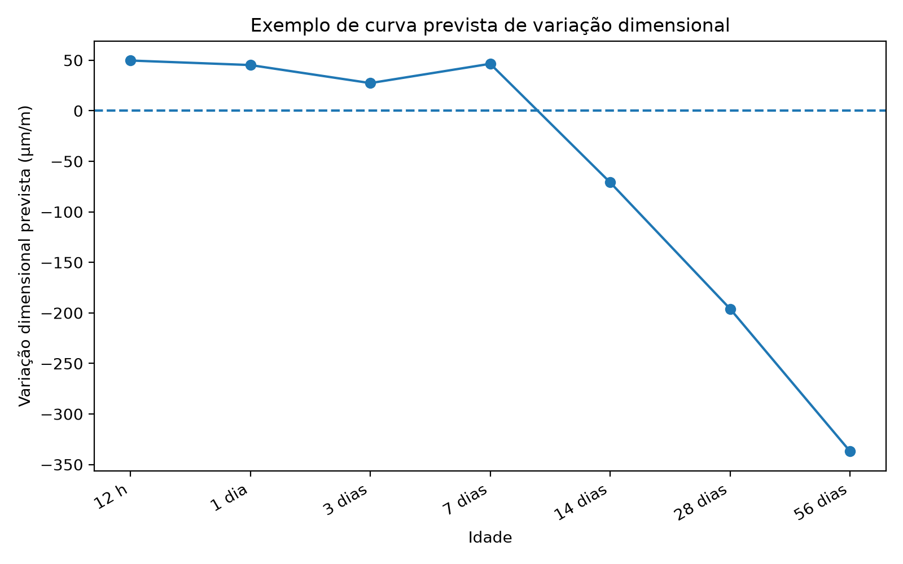

Protótipo preditivo longitudinal
Transformar a sequência experimental em uma saída operacional capaz de estimar ε(t) nas sete idades.
Resultado principal
O protótipo atual apresenta MAE 62,545 µm/m, RMSE 96,080 µm/m, R² 0,741 e acurácia do sinal 0,797.
Decisão metodológica
Tratar o protótipo como implementação funcional parcial até alinhar a configuração do modelo final com a seleção global.
Evidência tabular
| MAE | RMSE | R2 | acuracia_sinal | erro_mediano_absoluto | erro_percentil_75 | erro_percentil_90 |
|---|---|---|---|---|---|---|
| 62.54508284883887 | 96.08032750595626 | 0.7406686696689615 | 0.796821008984105 | 42.614779477339624 | 76.1345414615389 | 123.39998748572734 |

Rastreabilidade
Este experimento sustenta diretamente a seção 4.9 dos resultados parciais da dissertação.
Relatório detalhado do experimento
Conteúdo incorporado diretamente do relatório Markdown original do Experimento 09, preservando procedimentos, tabelas, resultados, interpretação e conclusão.
1. Caracterização e finalidade
Este experimento consolida o sistema preditivo longitudinal. A finalidade é transformar a modelagem desenvolvida nos experimentos anteriores em um protótipo operacional capaz de estimar a curva de variação dimensional para novos traços.
Diferentemente dos experimentos anteriores, este experimento não tem apenas função comparativa; ele organiza o modelo final, avalia seu desempenho, salva o artefato treinado e gera exemplo de predição por idade.
2. Variável de resposta e saída operacional
A saída principal é epsilon_t, isto é, a variação dimensional prevista para cada idade. O protótipo também classifica o sinal previsto como retração, expansão ou estabilidade e calcula faixas aproximadas de erro.
3. Procedimento executado
O modelo final foi avaliado por validação cruzada agrupada, com cálculo de métricas globais, resíduos, erro absoluto, acurácia do sinal e percentis de erro. Em seguida, o modelo foi treinado na base completa e salvo como arquivo .joblib.
4. Tabelas geradas
Tabela 1 — Métricas do protótipo longitudinal
A Tabela 1 apresenta as métricas finais do protótipo: MAE, RMSE, R², acurácia do sinal, erro mediano absoluto e percentis 75 e 90 do erro. Os percentis permitem comunicar uma faixa aproximada de incerteza.
Arquivo de origem: experimento_09_prototipo_longitudinal/resultados/metricas_prototipo_longitudinal.csv
| MAE | RMSE | R2 | acuracia_sinal | erro_mediano_absoluto | erro_percentil_75 | erro_percentil_90 |
|---|---|---|---|---|---|---|
| 62.545 | 96.08 | 0.741 | 0.797 | 42.615 | 76.135 | 123.4 |
Tabela 2 — Avaliação do protótipo por registro
A Tabela 2 apresenta a avaliação fora da amostra para cada registro longitudinal. Ela contém valor real, valor previsto, resíduo, erro absoluto e sinal real e previsto. É a tabela principal para auditoria do desempenho do protótipo.
Arquivo de origem: experimento_09_prototipo_longitudinal/resultados/avaliacao_prototipo_longitudinal.csv
A tabela completa possui 1447 registros e 9 colunas. Para manter a leitura do relatório viável, apresenta-se abaixo uma visualização parcial, mantendo o arquivo CSV completo na pasta de resultados.
| amostra_id | idade_label | idade_dias | epsilon_t | epsilon_previsto | residuo | erro_absoluto | sinal_real | sinal_previsto |
|---|---|---|---|---|---|---|---|---|
| 0 | 12 h | 0.5 | 0 | 61.124 | -61.124 | 61.124 | estabilidade | expansao |
| 138 | 12 h | 0.5 | 0 | -85.677 | 85.677 | 85.677 | estabilidade | retracao |
| 41 | 12 h | 0.5 | 0 | 55.069 | -55.069 | 55.069 | estabilidade | expansao |
| 139 | 12 h | 0.5 | 0 | 115.351 | -115.351 | 115.351 | estabilidade | expansao |
| 140 | 12 h | 0.5 | 0 | -83.261 | 83.261 | 83.261 | estabilidade | retracao |
| 40 | 12 h | 0.5 | 0 | 115.351 | -115.351 | 115.351 | estabilidade | expansao |
| 141 | 12 h | 0.5 | 0 | 52.533 | -52.533 | 52.533 | estabilidade | expansao |
| 137 | 12 h | 0.5 | 0 | 29.193 | -29.193 | 29.193 | estabilidade | expansao |
| 39 | 12 h | 0.5 | 0 | -85.882 | 85.882 | 85.882 | estabilidade | retracao |
| 143 | 12 h | 0.5 | 0 | 43.6 | -43.6 | 43.6 | estabilidade | expansao |
| 38 | 12 h | 0.5 | 0 | 76.289 | -76.289 | 76.289 | estabilidade | expansao |
| 144 | 12 h | 0.5 | 0 | -85.709 | 85.709 | 85.709 | estabilidade | retracao |
| 145 | 12 h | 0.5 | 0 | 96.06 | -96.06 | 96.06 | estabilidade | expansao |
| 37 | 12 h | 0.5 | 0 | -69.316 | 69.316 | 69.316 | estabilidade | retracao |
| 146 | 12 h | 0.5 | 0 | -83.859 | 83.859 | 83.859 | estabilidade | retracao |
| 142 | 12 h | 0.5 | 0 | -69.348 | 69.348 | 69.348 | estabilidade | retracao |
| 42 | 12 h | 0.5 | 0 | -85.564 | 85.564 | 85.564 | estabilidade | retracao |
| 136 | 12 h | 0.5 | 0 | -69.015 | 69.015 | 69.015 | estabilidade | retracao |
| 43 | 12 h | 0.5 | 0 | 62.53 | -62.53 | 62.53 | estabilidade | expansao |
| 126 | 12 h | 0.5 | 0 | -85.859 | 85.859 | 85.859 | estabilidade | retracao |
| 48 | 12 h | 0.5 | 0 | -80.262 | 80.262 | 80.262 | estabilidade | retracao |
| 127 | 12 h | 0.5 | 0 | 56.668 | -56.668 | 56.668 | estabilidade | expansao |
| 128 | 12 h | 0.5 | 0 | -86.498 | 86.498 | 86.498 | estabilidade | retracao |
| 47 | 12 h | 0.5 | 0 | 68.067 | -68.067 | 68.067 | estabilidade | expansao |
| 129 | 12 h | 0.5 | 0 | 106.056 | -106.056 | 106.056 | estabilidade | expansao |
| 106 | 56 dias | 56 | -430 | -444.462 | 14.462 | 14.462 | retracao | retracao |
| 59 | 56 dias | 56 | -460 | -433.128 | -26.872 | 26.872 | retracao | retracao |
| 168 | 56 dias | 56 | -390 | -461.631 | 71.631 | 71.631 | retracao | retracao |
| 22 | 56 dias | 56 | -590 | -465.703 | -124.297 | 124.297 | retracao | retracao |
| 107 | 56 dias | 56 | -360 | -369.698 | 9.698 | 9.698 | retracao | retracao |
| 58 | 56 dias | 56 | -320 | -340.893 | 20.893 | 20.893 | retracao | retracao |
| 167 | 56 dias | 56 | -260 | -254.481 | -5.519 | 5.519 | retracao | retracao |
| 108 | 56 dias | 56 | -290 | -270.28 | -19.72 | 19.72 | retracao | retracao |
| 27 | 56 dias | 56 | -350 | -282.06 | -67.94 | 67.94 | retracao | retracao |
| 38 | 56 dias | 56 | -350 | -285.742 | -64.258 | 64.258 | retracao | retracao |
Observação: o CSV completo correspondente permanece disponível na pasta de resultados do experimento.
Tabela 3 — Exemplo de predição de curva para novo traço
A Tabela 3 apresenta um exemplo de saída operacional do protótipo. Para cada idade, são fornecidos o valor previsto de epsilon_t, o sinal previsto e a faixa aproximada baseada no MAE.
Arquivo de origem: experimento_09_prototipo_longitudinal/resultados/exemplo_predicao_curva.csv
| idade_label | idade_dias | epsilon_t_previsto | sinal_previsto | faixa_mae_min | faixa_mae_max |
|---|---|---|---|---|---|
| 12 h | 0.5 | 49.676 | expansao | -12.869 | 112.221 |
| 1 dia | 1 | 45.209 | expansao | -17.336 | 107.754 |
| 3 dias | 3 | 27.341 | expansao | -35.204 | 89.886 |
| 7 dias | 7 | 46.455 | expansao | -16.09 | 109 |
| 14 dias | 14 | -70.933 | retracao | -133.478 | -8.388 |
| 28 dias | 28 | -196.009 | retracao | -258.554 | -133.464 |
| 56 dias | 56 | -336.995 | retracao | -399.54 | -274.45 |
5. Figura gerada
Figura 1 — Exemplo de curva prevista
A Figura 1 representa graficamente a curva prevista de variação dimensional para um novo traço. Essa figura demonstra a passagem do modelo estatístico para uma saída interpretável no formato de curva temporal.
6. Interpretação dos resultados
O Experimento 9 demonstra que a sequência experimental pode ser convertida em um protótipo de uso prático. O modelo passa a retornar uma previsão por idade, e não apenas um número isolado. Essa estrutura está mais alinhada ao objetivo de predizer a variação dimensional ao longo do tempo.
A acurácia do sinal indica se o protótipo acerta o sentido físico da deformação. As métricas MAE e RMSE indicam o erro de magnitude. Os percentis de erro ajudam a comunicar incerteza de forma mais prudente.
7. Limitação objetiva
Neste experimento foram calculadas métricas de regressão e acurácia do sinal, mas não foram geradas matriz de confusão, precision, recall e F1 por classe. Esses indicadores podem ser acrescentados em uma versão posterior caso se deseje aprofundar a avaliação categórica entre retração, expansão e estabilidade.
8. Conclusão do experimento
O Experimento 9 consolida o sistema preditivo longitudinal. O resultado final é um protótipo capaz de estimar a variação dimensional com sinal em diferentes idades, preservando a interpretação física entre retração, expansão e estabilidade.